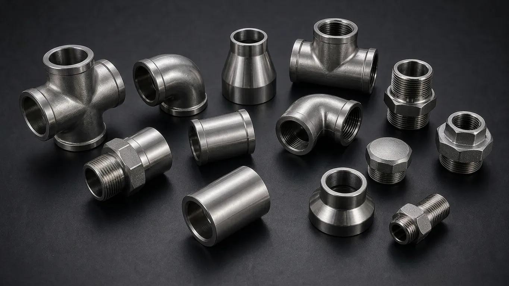

Gururaj Infradesigns is a trusted Monel K500 Pipe Fittings Manufacturer and Supplier in India, offering ASTM B366 / ASME SB366 fittings in UNS N05500 alloy with superior strength and excellent seawater corrosion resistance for offshore, marine, oil & gas, and chemical processing applications.
Monel K500 Pipe Fittings are high-strength nickel-copper alloy fittings developed for applications requiring both exceptional corrosion resistance and superior mechanical performance. These fittings retain the excellent seawater and chemical resistance of Monel 400 while offering significantly higher strength and hardness through precipitation hardening. Gururaj Infradesigns is a trusted Monel K500 Pipe Fittings Manufacturer in India, supplying premium-quality fittings for marine, offshore, oil & gas, and chemical processing industries.
Our range includes elbows, tees, reducers, pipe caps, stub ends, and crosses manufactured to international standards. Monel K500 Pipe Fittings are widely selected for critical applications where reliability, durability, and resistance to harsh operating conditions are essential.

Monel K500, designated as UNS N05500, is a precipitation-hardenable nickel-copper alloy strengthened by the addition of aluminum and titanium. It combines the outstanding corrosion resistance characteristics of Monel 400 with enhanced tensile strength, yield strength, and hardness. Compared to Monel 400, Monel K500 can provide nearly three times the yield strength while maintaining excellent resistance to seawater and chemical attack.
As part of our extensive range of Nickel Alloy Pipe Fittings, Monel K500 Pipe Fittings are commonly used in offshore equipment, pump shafts, oil well tools, marine hardware, and chemical processing systems where higher strength is required without compromising corrosion resistance.
| Parameter | Details |
|---|---|
| Product | Monel K500 Pipe Fittings |
| Grade | Monel K500 (UNS N05500) |
| Specifications | ASTM B366 / ASME SB366 |
| Dimensions | ANSI/ASME B16.9, B16.28, MSS-SP-43 |
| Product Types | Elbow, Tee, Reducer, Pipe Cap, Stub End, Cross |
| Size – Seamless | 1/2" to 10" |
| Size – Welded | 1/2" to 48" |
| Type | Seamless / ERW / Welded / Fabricated |
| Thickness | SCH 10, 20, 40, STD, 60, 80, XS, 100, 120, 140, 160, XXS |
| Certification | EN 10204 3.1 / MTC Available |
Monel K500 offers substantially greater tensile and yield strength compared to Monel 400 due to precipitation hardening. This makes it suitable for heavy-duty industrial applications subjected to higher mechanical loads.
The alloy provides excellent resistance to flowing seawater, marine atmospheres, and offshore environments. Its corrosion resistance helps extend service life and reduce maintenance requirements.
Monel K500 Pipe Fittings perform reliably in acidic and alkaline environments commonly encountered in chemical processing facilities, offering dependable long-term performance.
Enhanced hardness improves resistance to wear, erosion, and mechanical damage, particularly in dynamic applications involving high fluid velocities.
The alloy maintains excellent mechanical properties from sub-zero temperatures to moderately elevated service temperatures, making it suitable for a wide range of industrial conditions.
| Element | Composition (%) |
|---|---|
| Nickel + Cobalt | 63.0 Min |
| Copper | 27.0 – 33.0 |
| Aluminum | 2.3 – 3.15 |
| Titanium | 0.35 – 0.85 |
| Iron | Max 2.0 |
| Manganese | Max 1.5 |
| Carbon | Max 0.25 |
| Silicon | Max 0.50 |
| Sulfur | Max 0.01 |
| Property | Value |
|---|---|
| Tensile Strength | 790 MPa Min |
| Yield Strength | 586 MPa Min |
| Elongation | 20% Min |
| Density | 8.44 g/cm³ |
| Hardness | Approx. 27–35 HRC |
| Maximum Recommended Service Temperature | Up to 480°C |
Monel K500 Pipe Fittings are extensively used in offshore platforms, shipbuilding, propeller systems, and seawater piping due to their excellent resistance to marine corrosion and erosion.
The alloy is widely utilized in oilfield equipment, sour gas service, and drilling operations where high strength and corrosion resistance are critical for operational reliability.
Monel K500 Pipe Fittings are suitable for handling aggressive chemicals and process fluids, helping improve plant safety and reduce downtime in demanding environments.
Because of their excellent wear resistance and mechanical strength, these fittings are often selected for high-performance pump systems and valve assemblies.
Power plants rely on Monel K500 fittings in specialized systems exposed to corrosive environments and varying temperature conditions.
| Property | Monel K500 | Monel 400 | Nickel 200 |
|---|---|---|---|
| UNS Number | N05500 | N04400 | N02200 |
| Strength | Excellent | Good | Moderate |
| Corrosion Resistance | Excellent | Excellent | Very Good |
| Seawater Resistance | Excellent | Excellent | Good |
| Hardness | High | Moderate | Moderate |
| Wear Resistance | Superior | Good | Moderate |
| Offshore Applications | Extensive | Extensive | Limited |
| Chemical Processing | Excellent | Excellent | Good |
| Typical Use | High-Strength Marine Service | General Marine Service | Caustic Applications |
Monel K500 Pipe Fittings are ideal when higher mechanical strength is required alongside excellent corrosion resistance. For standard marine and seawater applications, many industries prefer Monel 400 Pipe Fittings, while Nickel 200 Pipe Fittings are commonly selected for caustic processing and high-purity environments.
| Finish | Benefits |
|---|---|
| Pickled | Enhances corrosion resistance by removing contaminants |
| Passivated | Improves surface protection |
| Polished | Provides a smoother finish and easier cleaning |
| Mill Finish | Suitable for standard industrial applications |
Proper finishing contributes to improved corrosion performance and longer service life in demanding environments.
Gururaj Infradesigns supplies Monel K500 Pipe Fittings in multiple sizes, schedules, and configurations to meet the requirements of marine, offshore, oil & gas, and industrial projects. Our products are supplied to EPC contractors, engineering consultants, fabricators, and industrial buyers throughout India.
With a focus on quality assurance, technical guidance, and timely delivery, we help customers source dependable nickel alloy piping components that align with project specifications and operational expectations.
Quality is an integral part of our manufacturing and supply process. Every Monel K500 Pipe Fitting undergoes inspection for dimensional accuracy, material compliance, and workmanship before dispatch.
As an ISO Certified Company, we remain committed to supplying reliable piping solutions that consistently meet industrial quality standards and customer requirements.
Selecting the right nickel alloy pipe fitting requires understanding operating temperatures, corrosion conditions, pressure ratings, and mechanical requirements. Choosing the appropriate material grade can significantly improve reliability and service life. Our team can assist with selecting the right Monel K500 fitting type, size, and specification for your application. We work closely with engineers, EPC contractors, consultants, and industrial buyers to provide practical support and dependable piping solutions for critical projects.